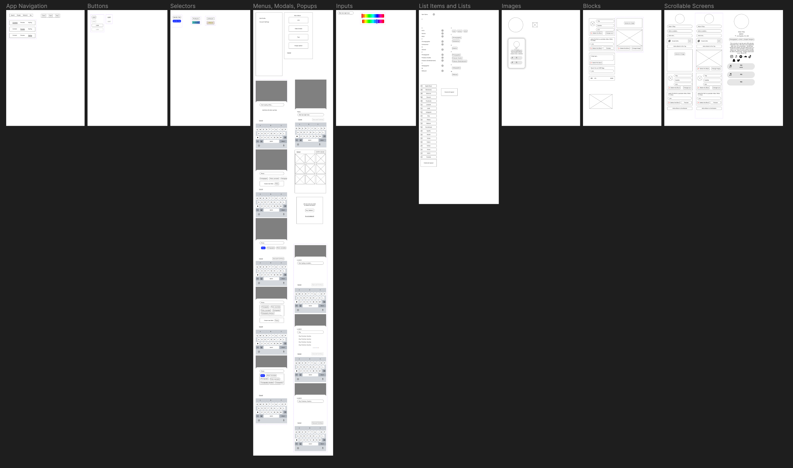

Link™ 🖇📱
App Design for ILOVEWHATEVER
Problem
How might we cut to the core of creative connection, and make our app so simple that everyone can enjoy it?
Link was conceived in the summer of 2022, after our term-sheet investor lost their LPs, and we lost our funding. We had to refocus on getting proven results, user growth. Our current app was not growing because 1) There weren't enough users and 2) The bugs and minimalist aesthetic were giving "unfinished." These were the two main reasons, and we knew they were because of surveys I had circulated over several months to the 600 users we had.
We also noticed that some users were getting stuck on the portfolio-building aspects of our app, because the experience of creating pages, and organizing content onto different pages, was still a very complex endeavor. And while many people supported the idea of creating a whole portfolio someday, many beginning artists only have a couple things to share.
Above, we can look at the legacy site to see how our friend Lionel got confused by the page system and kept creating New Pages within New Pages without realizing. Many of these pages also contained new pages.
So how do we simplify the app (or help users better understand it's complexity) and drive more engagement? Through better education on how to use its complec features? Through the addition of simple social reactions to our content feed? Though both goood options in their own rite, we decided on more a more radical rework of the app, which lead to the removal of complex and confusing features and a refocus on the basics of creative connection.
Simplify, Simplify, Simplify
The most incisive question we asked ourselves was: if we could go back to Nov 2019, knowing what we know now, what would we build? Throughout I Love What Ever's journey, our mission has been to foster genuine connections betweeen up and coming artists. For a long time, we thought that the best way to do this was through simplifying the portfolio experience, having artists upload their work, and tracking mutual collaboration. It would have been much simpler to just ask people "who are your trusted creative peers?" and have them add their truted peers. But it took a long time and lots of iteration for key stakeholders to accept that simple declarative connection was an option. Relaxing that constraint gave us a lot of freedom to rethink the tangled information web we had woven.
We also asked: what are the most critical parts of an artist network? We arrived at three core features: 1) representation of the artistic self through links to work and customization options, 2) ability to find and connect to the creatives you know, and 3) Information about your own creative network. Another constraint: what can we build in the next two months, while we still have the latitude to pursue this full-time?
More extensive team discussions ensued. In the end, we decided to add greater customizability (a top request from our users), to eschew complex page-nesting portfolios for link lists on mobile (which had proven to one of the most successful parts of the web application) and to support those two features with great searchability (the core of exploring your virtual network). If we had time after all of that, then we could add a prototypical graph visualization.
Wireframing
After we had agreed on the core of what we were going to build, I set to work wireframing these critical features. Normally, I might start sketching and wireframing on paper, but since I already had at this point several years of noodling on the basic structure, I went straight to digital wireframes. Here are a couple samples:
That's 49 screens for adding links and other kinds of widgets to your profile, which a really comprehensive wireframe. Wireframing this extensively allows us to get a clear idea and feel for lots of proposed functionality before deciding what makes the cut. We ended up limiting the functionality to be much simpler for the first release.
As I go, I like to make a local wireframe component library as a way to keep track the pieces and atomic elements of this app. I like to build apps this way, because it means that everything included in the wireframe can be edited en masse, and it also encourages a frugality, such that everything is built in terms of clearly defined units from the start. In the future, I might make a generalized wireframing library of the most common componentsthat I can use for any project.
At junctures during the wireframing process, I run product syncs with our small team to get more perspectives and feedback on each pass of the design. Typically, once the wireframes passed muster with our internal team, I would create hi-fi prototypes that we could test with users. This project was a little different because we were trying to move at a highly accelerated pace. And, we felt comfortable kicking off development directly after wireframing because we had already tested many of our component ideas with core users. So, once things reach an equilibrium of "these look structurally sound, and this is something we can build," Henry and Gabe started development using the wireframes, and I moved on to creating and styling Hi-fidelity prototypes.
Hi-Fidelity Assets, and an updated Design System
In contrast to the minimalist, "move fast and break stuff" ILWE app we had been working on for 8 months, wanted to create a new, intentional, "finished" look for Link. Keeping the basic layout agreed upon during wireframing, I defined all of the colors and shadows in the high-fidelity prototype using colors and styles stored in our Design Library. This early investment in time and thought paid off massively because it allowed me to iterate with color, font, and style very quickly using a control panel and see those styles instantly propogate throughout the entire design.
Here are some of the different flat and neumorphic color themes that I experimented with:

The above four designs were the most consistently popular, with the dark theme getting the most consistent support, but also often critiqued as too masculine. The team ultimately chose the dark theme for our first release. For the prototype at top, I reverted to a white theme inspired by work from Dieter Rams. The following four themes were also quite popular. Each was the "favorite" of various users, but none recieved consistent support across users except for the purple and blue theme.
Maybe a blue neumorphic theme is in order. The benefit of the parameter-controlled prototype is that even while writing up this case study, I can tweak the theme in a matter of minutes: